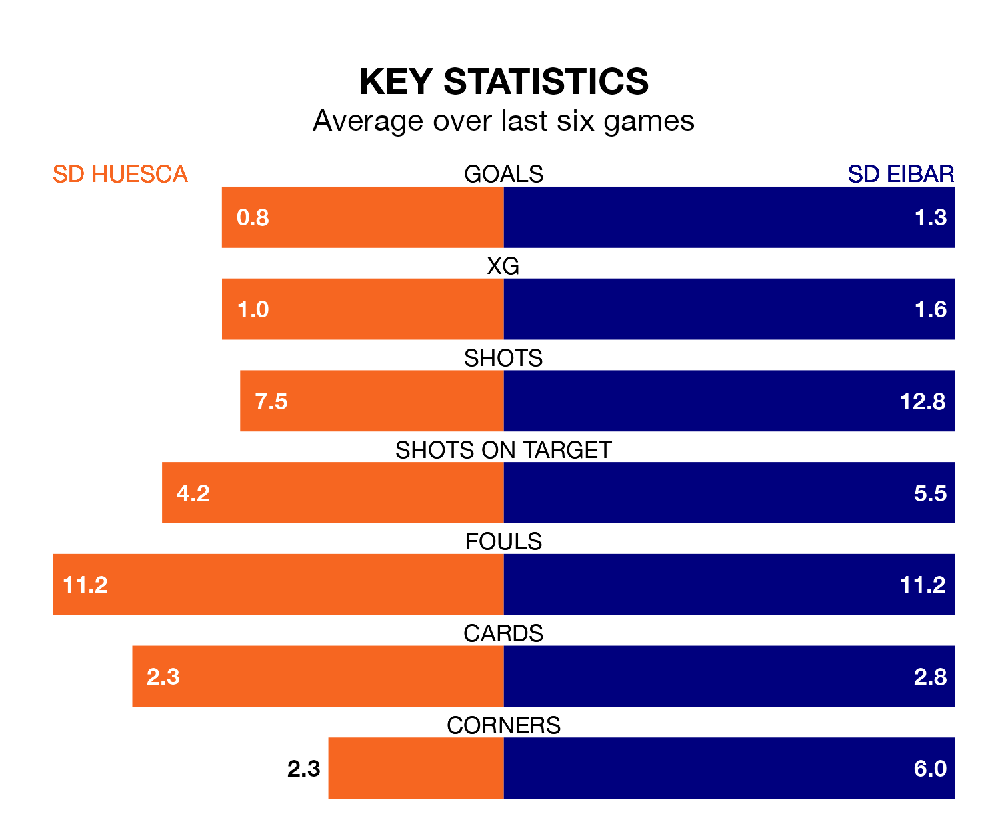

SD Eibar face a challenge to maintain their high-scoring form away against a tight SD Huesca defence on Sunday.
With 36 goals in 22 games, Eibar are the joint-top scorers in the Segunda División ahead of the 5.30pm kick-off at the Estadio El Alcoraz.
They face a Huesca side who have scored 16 in 22 matches, but conceded only 18 goals, putting them fourth among the league's tightest defences – only Leganés, Sporting Gijón and Real Oviedo have conceded fewer goals.
In the last 10 years, Huesca and Eibar have played each other on 10 occasions. Huesca won three of them, Eibar four, and they drew three times.
On average, Huesca scored 1.2 goals and Eibar 1.2 in those matches.
Their last meeting was on October 15, when they played out a 1-1 draw.
Huesca are 18th in the table after 22 games, of which they have won five and drawn eight, earning 23 points.
Eibar are 13 places ahead of the hosts in fifth, with 10 wins and five draws putting them on 35 points.
In Álvaro Fernández, Huesca can rely on one of the league's safest pair of hands. He has kept eight clean sheets in his 22 appearances this season in the Segunda División.
In the away team's net, Luca Zinedine Zidane has three clean sheets in 22 games. He has conceded a goal every 76 minutes, 60% more often than the 124 minutes between goals for Fernández Llorente.
Huesca are in mixed form in the Segunda División, with two wins and a draw from their last six games.
With two wins and two draws over that period, Eibar's form is slightly better – they have taken eight points from 18, compared to the home side's seven.
Huesca's last match was on January 14, a 0-0 draw against Sporting Gijón.
Eibar beat Racing Santander 2-0 last time out, on January 12, with Ager Aketxe Barrutia and Juan Diego Molina Martínez on the scoresheet.
Updated: 13:09 (UTC), 17/01/24